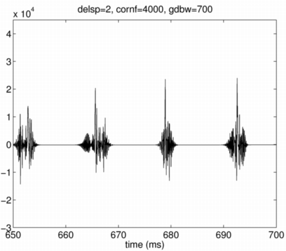
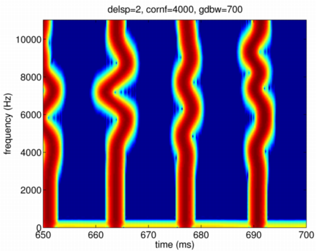
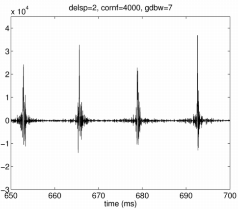
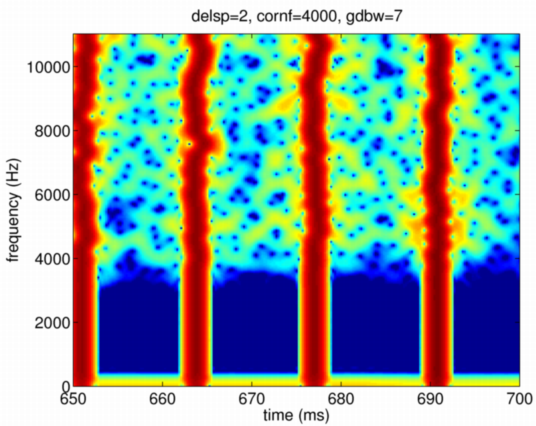

| | 群遅延変動の空間周波数帯域幅：groupDelaySpatialBandWidth | Contents | Index |
この制御パラメタの既定値は70Hzになっています。 これは、群遅延特性の変動が周波数方向でどの程度の粗さを持つかを決めるパラメタです。 時間分解能と周波数分解能には不確定性の関係があるため、 群遅延の周波数方向での変動を細かく規定し過ぎると、 時間方向に波形が広がってしまうという現象が生じます。 この広がりを制御するために、群遅延の周波数方向での変動の 空間周波数帯域幅を規定します。 周波数方向の群遅延が、この広がりを持つ周波数軸上での移動平均関数によって 平滑化されると解釈すると、イメージがつかめるかも知れません。 この値を、既定値の10倍の700Hzとした場合の波形とスペクトログラムを示します。 ここでも様子を分かり易くするために、 群遅延変動の標準偏差を2msとしました。
prminS.groupDelayStandardDeviation=2; prminS.groupDelaySpatialBandWidth=700; sy700 = exstraightsynth(f0raw,n3sgram*0+100,ap*0-80,fs,prminS);
波形は、やや広がりが小さいように見えますが、違いは顕著ではありません。

しかし、スペクトログラムでは、空間周波数帯域幅が70Hzの場合に 認められた、パルスにまつわりつく雲のような成分が消えていることが 分かります。 また、周波数方向でのうねりも滑らかになっていることが分かります。

群遅延変動の標準偏差が同一であっても、 空間周波数帯域幅を小さくすると、細かな成分が時間方向に拡散することが分かります。


| | 群遅延変動の空間周波数帯域幅：groupDelaySpatialBandWidth | Contents | Index |